Portfolio
Selected RTL, computer architecture, SoC, FPGA, ASIC flow, and hardware verification work.
Projects
tinyNPUINT8 Systolic Accelerator & ASIC Timing Closure
tinyNPUINT8 Systolic Accelerator & ASIC Timing Closure
tinyNPU is a fixed 4x4 signed-INT8 matrix-multiply accelerator built around an output-stationary systolic array. Sixteen pipelined processing elements move A operands across rows and B operands down columns while accumulating INT32 outputs locally. The systolic engine preserves the existing register-controlled scratchpad core, APB/AXI-Lite and single-beat AXI DMA wrappers, and double-buffered AXI4-Stream architecture while closing post-route setup and hold timing at 100 MHz in OpenLane/SKY130.
Architecture


Sparrow-VRISC-V Processor and Multicore Coherent SoC
Sparrow-VRISC-V Processor and Multicore Coherent SoC
Sparrow-V is a synthesizable RV32I processor project extended into a four-core coherent SoC, with a four-lane INT8/INT16 vector engine, custom vector instructions, private L1 caches, shared memory, and MSI cache coherence.
AXI4-Stream Router IPRTL Design and UVM Verification Project
AXI4-Stream Router IPRTL Design and UVM Verification Project
AXI4-Stream Router IP is a 2-input, 4-output packet router RTL and verification project with store-forward buffering, round-robin arbitration, packet locking, backpressure handling, and a UVM-focused verification environment.
SpeakUpReal-Time Sign Language to Speech Translator
SpeakUpReal-Time Sign Language to Speech Translator
SpeakUp is an embedded sign-language-to-speech system designed to run fully offline on a Raspberry Pi 3 with a Sony IMX500 camera. The project combined vision, on-device inference, and speech synthesis into one real-time pipeline, with the goal of making gesture recognition usable on constrained hardware rather than relying on cloud processing. The work involved fine-tuning and quantizing a MobileNetV2 model, integrating eSpeak text-to-speech, and then optimizing the full capture-to-neural-network-to-audio path with pipelining and thread pinning so the system stayed responsive in practice.
DissertationNovel Tunable Microwave Frequency Synthesizer (Cascaded PLL)
DissertationNovel Tunable Microwave Frequency Synthesizer (Cascaded PLL)
This dissertation project centered on designing a tunable microwave frequency synthesizer for 5G systems using a novel cascaded-PLL architecture. The work covered the full stack from RF design through firmware and user control: defining the synthesizer architecture, validating performance in the lab with a spectrum analyzer, creating a CRC-protected SPI interface with read-back verification, and building C/C++ firmware plus a Python GUI to make switching and calibration practical. A big part of the project was proving that the design was not only theoretically sound, but also robust on real hardware.
Media
Measurements, PCB, and tooling snapshots.


STMicroelectronicsAutonomous Line Tracking Buggy
STMicroelectronicsAutonomous Line Tracking Buggy
This project involved building an autonomous line-tracking buggy and tuning its control loop so it could follow the track reliably under real competition conditions. The main engineering challenge was designing and tuning a PID controller that stayed stable while handling sensor noise and track variation. The end result was a robust control system that translated directly into competition performance.
Experience
Jaguar Land Rover North AmericaSemiconductor Applications Engineering Intern | Detroit, MI | Jul 2026-Sep 2026
Jaguar Land Rover North AmericaSemiconductor Applications Engineering Intern | Detroit, MI | Jul 2026-Sep 2026
Working on embedded SoC performance debug and board-level validation, with a focus on Cortex-A76 PMU profiling, low-level Linux tooling, and workload-level performance analysis.
VAST Lab, UCLAStudent Researcher, FPGA Architecture & GPU Acceleration | Jan 2026-Mar 2026
VAST Lab, UCLAStudent Researcher, FPGA Architecture & GPU Acceleration | Jan 2026-Mar 2026
Student researcher focused on FPGA architecture and GPU acceleration.
NESO / National Grid ESOSoftware Engineering Intern | Leamington Spa, UK | Jul 2024-Sep 2025
NESO / National Grid ESOSoftware Engineering Intern | Leamington Spa, UK | Jul 2024-Sep 2025
Software engineering internship at NESO / National Grid ESO in Leamington Spa, UK.
About
I'm a UCLA M.S. ECE student focused on RTL design, computer architecture, SoC design, FPGA development, ASIC flows, and hardware verification. I like building hardware projects end-to-end, from microarchitecture and RTL through testbenches, timing analysis, and flow validation.